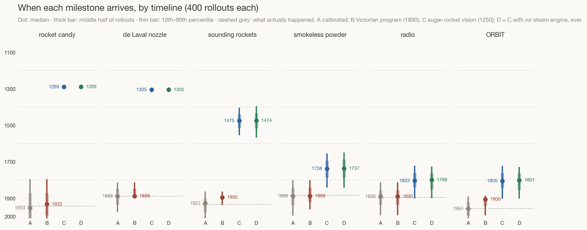
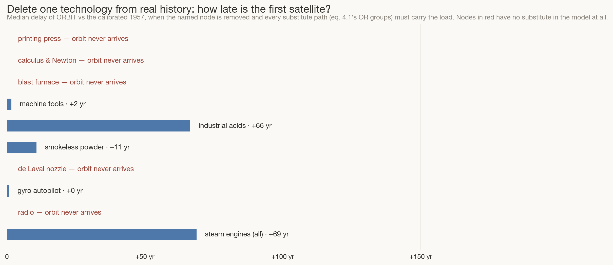

A pocket cliodynamics engine: two rival counterfactual humanities — the Victorian satellite and the sugar rocket — run four hundred times each, with and without the steam engine.
Build: one session (12 July 2026), ~80 minutes wall-clock · tokens (estimated): ≈2M in (cached context re-reads, chart inspection, two model-debugging rounds) / ≈60k out (model, data, page, narrative) · model: Claude Fable 5. Figures are estimates from the session log, not billing telemetry.
Two essays now disagree about why spaceflight came late. Chapter 3 (mine) says the gate was a customer: every ingredient existed by 1896, and orbit waited for the hydrogen bomb to pay for it. The prompter’s companion essay — Why Space Rockets Could have Happened Sooner But Didn’t — says the gate was vision: rocket candy (sugar + saltpetre, double black powder’s impulse, zero new chemistry) sat unmixed for seven hundred years in the very cities where Hasan al-Rammah wrote rocket recipes next door to sugar refineries, because nobody wanted a motor. Rather than argue, this page builds the machine both claims can be fed into: a dependency graph of forty-three technologies, lags calibrated so the baseline reproduces real history, then perturbed — a vision event here, a deleted steam engine there — and rolled forward four hundred times. Stephen Jay Gould asked what would survive if you replayed life’s tape. This is that experiment for the technosphere, at toy scale, with the assumptions in public view.
Cliodynamics — Peter Turchin’s name for treating history as a dynamical system — usually models states: population, elites, fiscal stress. Technology is harder, because inventions look like one-off miracles. But chapters 1–3 of this site keep finding the same structure beneath the miracles: a prerequisite lattice (no smokeless powder without industrial acids; no de Laval nozzle without something that rewards it) crossed with motive forces (someone must conceive the thing, and someone must pay for it). That structure is modelable. Each technology becomes a node; each node arrives some lag after its prerequisites; vision and customers shorten the lag; substitutes let one prerequisite stand in for another. History as it happened becomes the calibration run, and each of our two theses becomes a named, disputable perturbation.
The four timelines this page runs:
A technology i becomes buildable when every one of its prerequisite groups is satisfied; a group is satisfied when any member has arrived — substitutability lives in these OR-groups (Bessemer’s converter needs a blast to blow it, but a waterwheel blows as well as a steam engine). The gate is1
and the arrival adds a lag — the years of work, luck, and neglect between possible and done — jittered log-normally and divided by the motive forces2:
How to read it: is technology j’s arrival year; is the year i’s last prerequisite fell; its base lag; a standard normal draw, one per node per rollout, with = 0.14; and are vision and customer multipliers, both 1 unless a scenario rule targets the node (a program that begins after the gate accelerates only the remaining work — the lag integrates through rate changes). Lags are calibrated so that scenario A’s median arrival equals the real year for all forty-three nodes:
So the baseline cannot be wrong about history — it is history, with error bars. Everything interesting is a difference from it. The last equation is the knife: to measure what any single technology was worth, delete it and re-run everything3,
One honest sentence before the results: this is a toy. It has one history to calibrate on, its node list is a judgment call, and it cannot imagine paths its author didn’t put in the graph. What it buys is not truth but accountability — every disagreement with its output must name the node, edge, or multiplier it disputes. The full graph, lags included, is in timelines_data.js.

Read column by column. Timeline B lands the satellite at a median of 1913 — an independent reconstruction of chapter 3’s “1905 ± 10,” from a completely different method (that essay staged the rocket equation; this one never once computes a Δv). Two models, one window; that is as close to a cross-check as counterfactual history gets.
Timeline C is the surprise, and it cuts both ways. The vision event works spectacularly at first: rocket candy by ~1288, an empirically-found expansion nozzle by ~1305 (the model’s most heroic claim — flagged, disputable, and exactly what the prompter’s draft argues iteration could deliver once the propellant rewarded it), serious sounding rockets by ~1480. A medieval world with a spaceward craft tradition, four hundred years of Congreve-class capability before Congreve. And then the timeline stalls for three centuries — because the satellite doesn’t need better rockets. It needs industrial acids (median ~1690 even with the program’s spillovers), smokeless powder (~1745), and above all radio (~1807), which waits on the scientific-institutional stack — printing, societies, electromagnetism — that no amount of rocketry accelerates. Orbit arrives at a median of 1808: seven hundred years of extra vision buys about a hundred and fifty years of satellite.
Timeline D answers the steam question with an anticlimax that is the point: delete every steam engine from the sugar-rocket world and orbit moves by about ten years (median 1818, statistically indistinguishable from C). The graph explains why: everything steam historically fed has a substitute path — Bessemer’s blast blown by waterwheels, thermodynamics learned from rocket motors instead of steam cylinders (Carnot studied the engine his world had; a 1500s motor culture studies chambers and nozzles), compressors run off internal-combustion engines that arrive by their own machine-tool route. In the sugar timeline the steam engine is not a foundation; it is one lane of a road that had several.
The same knife, turned on our own timeline: remove one node from scenario A, keep everything else, and ask when the satellite arrives (eq. 4.4).

Three lessons in one chart. First, steam mattered enormously in our timeline — about +71 years — but through an unexpected channel: not factories, which the model routes around, but the de Laval nozzle, which history happened to derive from steam turbines, and which a world without steam must wait to discover through late solid-motor work. Steam was load-bearing in the timeline that lacked rocket vision, and irrelevant in the one that had it (timeline D) — the two answers to “how much does the steam engine matter?” are different because the question was always about vision, not thermodynamics. Second, the red rows: radio, printing, calculus, the blast furnace, the nozzle — the satellite’s true single points of failure are mostly not rocket technologies. Third, fragility runs both ways: give the model the prompter’s Essonne toggle (the 1788 chlorate disaster re-flipped as luck, below) and castable composite propellant arrives decades early — yet orbit barely moves, because chemistry without a program is inert. Vision without chemistry stalls (timeline C’s three-century plateau); chemistry without vision molders on the shelf, exactly as perchlorate did for 126 real years. Both essays were right, about different halves of a conjunction.
The whole graph, live. Pick a timeline, then argue with it: drag the vision event through nine centuries, throttle the program, delete steam, allow the Essonne disaster to un-happen, or drop the requirement that a satellite must be heard (radio) rather than merely seen. Every control re-runs 250 rollouts of eqs. (4.1)–(4.2) in your browser. (Prefer to inhabit one world instead of surveying four hundred? The Tape Machine plays single rollouts as a year-by-year chronicle.)
Hover any node for its prerequisites and dates · whiskers span the middle 80% of rollouts
The engine is arithmetic from stated assumptions; what follows is interpretation.
The graph has 43 nodes and ~70 prerequisite edges, hand-chosen; dates are standard reference values; lags are calibrated by iterated simulation until scenario A’s medians reproduce the real years (the max over noisy gates biases naive lags late, so calibration shrinks them; details in make_timeline_model.py). σ = 0.14 was chosen so that A’s 10–90% band on the satellite spans roughly ±70 years — wide enough to be humble, narrow enough to distinguish scenarios. Programs multiply progress rates only from their start date (a rule beginning after a node’s gate accelerates only remaining work). The known sins: n = 1 — one history calibrates everything, the founding critique of cliodynamics; graph closure — the model cannot use a path its author didn’t draw, so “orbit never arrives” means “not via these nodes,” not “impossible”; the 1305 nozzle — timeline C’s empirically-iterated de Laval equivalent is the single most disputable edge, taken deliberately from the prompter’s draft (pottery kilns evolved sophisticated airflow without gas dynamics) and easy to disagree with by throttling the program slider; institutions as nodes — “scientific method & societies” is a 1660 dot standing in for a civilisation-scale process; no reverse causation — early rockets here never retard anything (no Essonne-style fear events except the one modelled), though real history is full of technologies that salted their own fields. Prior art, so this page doesn’t pretend novelty: Turchin’s cliodynamics for the ambition; the Brian Potter / Marginal Revolution “inventions-behind-their-time” analyses the prompter’s draft engages; tech-tree games (Civilization) for the lattice intuition this page tries to make honest — their trees are authored destinies, this one is a calibrated argument.
Figures generated by
make_timeline_model.py; static versions:
Fig 1 · Fig 2
(each also as *_dark.png); the interactive runs the identical model
from timelines_data.js. Companion essays:
chapter 3 (the customer thesis) and the
prompter’s Why Space Rockets Could have
Happened Sooner But Didn’t (the vision thesis) — this page is the argument
they have when they meet. And if the distributions here feel too bloodless, the
Tape Machine deals the same engine
out one world at a time: set the assumptions, press play, and live through a
single rollout year by year.
{kind=link}
{kind=link}